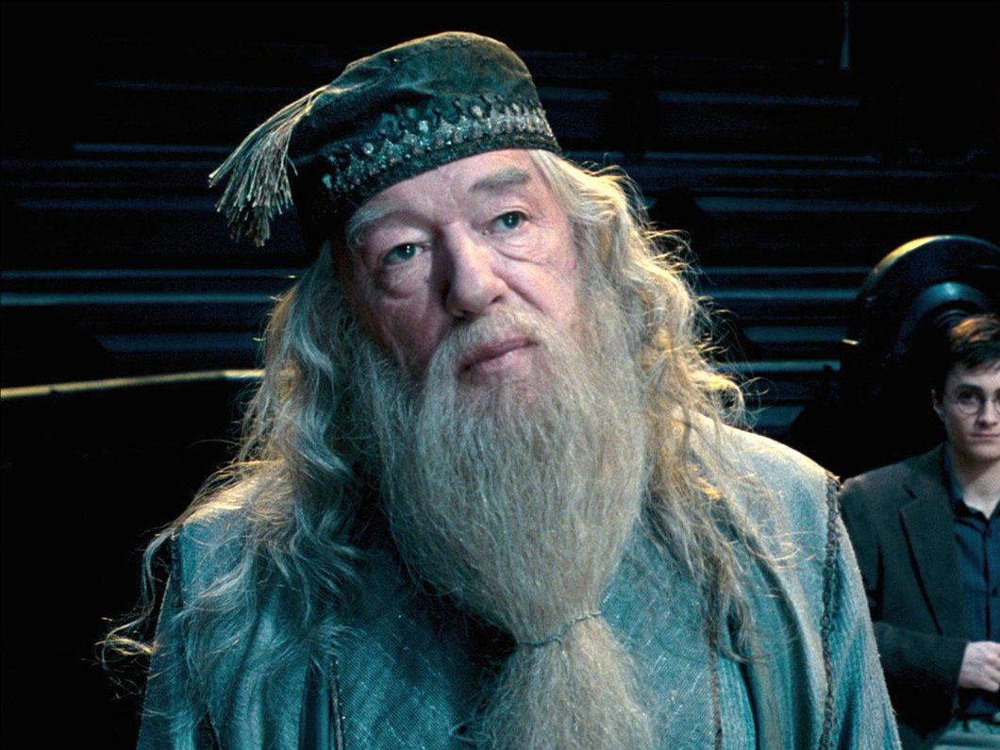

Фритрек и нулевой спринт: Подготовка к работе
Альбус Дамблдор

Это было самое начало пути. На этом этапе важно было проникнуться основами и настроиться на учёбу. И, возможно, подумать, как новые знания могут повлиять на ваше будущее.
Если я в чём-то сомневаюсь, я возвращаюсь к началу.